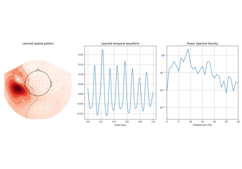
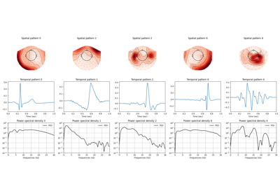

Multivariate CSC with rank 1 constraints#

Extracting \mu-wave from the somato-sensory dataset
Extracting :math:`\mu`-wave from the somato-sensory dataset

Extracting artifact and evoked response atoms from the MNE sample dataset
Extracting artifact and evoked response atoms from the MNE sample dataset

Extracting artifact and evoked response atoms from the sample dataset
Extracting artifact and evoked response atoms from the sample dataset